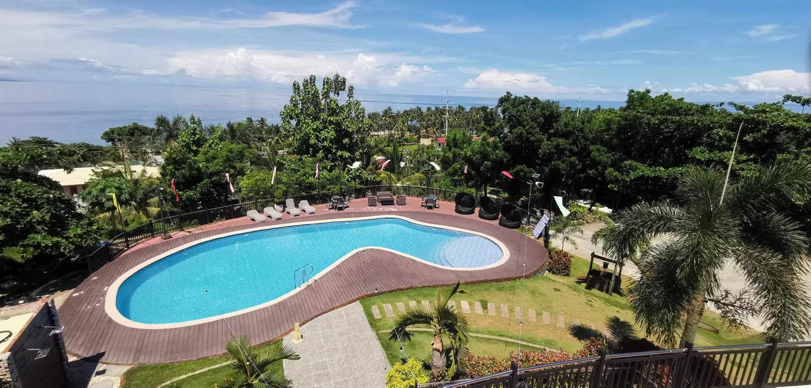
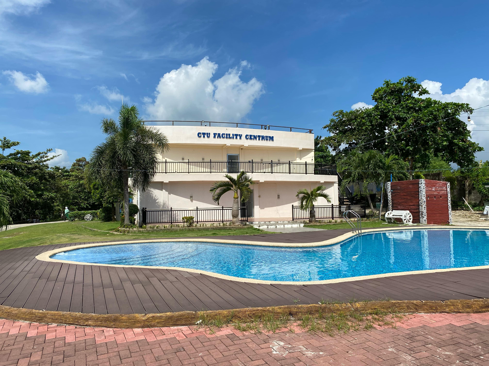
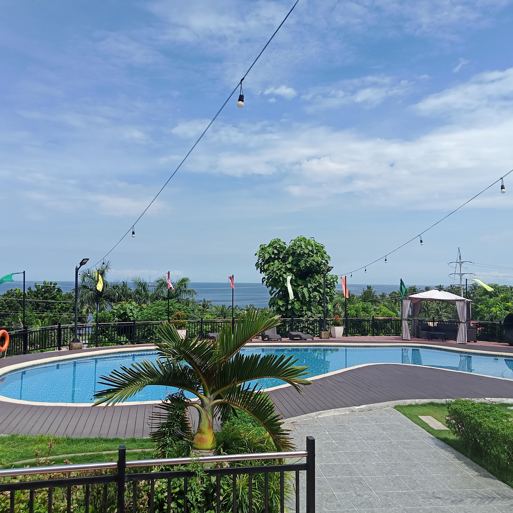

The Cebu Technological University (CTU) Danao Campus has made impressive strides in providing high-quality facilities to its students and staff, and one of its standout additions is the Centrum facility.This facility offers a multifunctional space designed to cater to various academic, recreational, and social activities within the campus. The Centrum boasts a refreshing ambiance that combines modern amenities with natural beauty, offering views of scenic landscapes and outdoor elements such as a pool area and open green spaces. These provide a serene environment that encourages relaxation and rejuvenation for students and faculty alike, complementing the academic atmosphere of the university. The facility is strategically located, offering ease of access for both students and visitors. The design is structured to host a variety of events, including conferences, seminars, and other school-related functions, making it an ideal venue for both academic and extracurricular engagements. Furthermore, the Centrum promotes wellness, not only through its spacious recreational areas but also with its integration of nature-inspired elements like greenery and water features, fostering an environment conducive to learning, collaboration, and personal development. The outdoor areas offer spaces for social interaction, while the indoor facilities ensure comfort and accessibility for more formal gatherings. Overall, the CTU Danao Campus Centrum facility is a testament to the university’s commitment to providing an enriching and holistic environment for its community, focusing not just on academic growth but also on overall well-being.
CTU Danao Centrum Facility
Published on October 07, 2024


